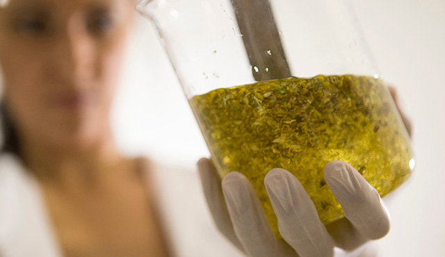
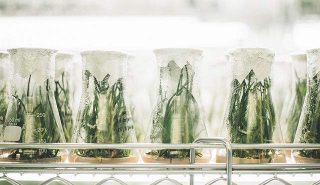
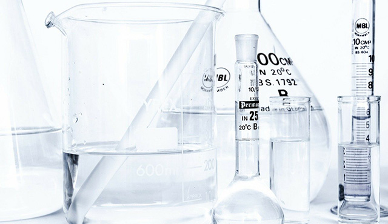

FAQ
- 바이오디젤이란 무엇인가요?
- 바이오디젤의 주원료는?
- 현재 바이오디젤의 의무 혼합률은 어느 정도인가요?
- 바이오디젤이 필요한 이유는 무엇인가요?
- 신재생연료의무혼합제도(RFS)란?
인류의 미래와 행복을 완성할
에너지의 새로운 가치를 추구합니다
사업소개

바이오디젤은 동.식물성 유지등을 알코올에 반응시켜 만든 순도 96.5% 이상의 지방산 메틸 에스테르를 말합니다
#폐자원재생 #배출가스저감 #모든차량사용 #친환경에너지 MORE +
동.식물성 유지, 바이오디젤 및 바이오디젤 부산물등 바이오매스 원료로 만들어지는 재생에너지의 일종으로, 발전소 등의 대체연료로 사용합니다
#온실가스저감 #비용절감 #수입대체효과 #친환경대체에너지 MORE +
글리세린은 천연 원료에서 합성되거나 얻게 되는 당 알코올로 의약품 및 산업 전반에서 안전하게 사용됩니다.
#FDA #천연원료 #화석에너지대체 #무독성 MORE +제조과정
Crude Oil을 전처리하여 바이오 중유를 제조합니다.
글리세린 Water의 Fatty Phase 분리하는 전처리 과정을 거친 후 3단계 증발 시스템을 통해 글리세린을 농축합니다.
Centrifugel Separator에 의해 불순물을 제거합니다.
오시는길
여수국가산업단지 방향 - 덕양삼거리(좌측방향) - 석창사거리(좌회전) - 주삼IC사거리(직진)